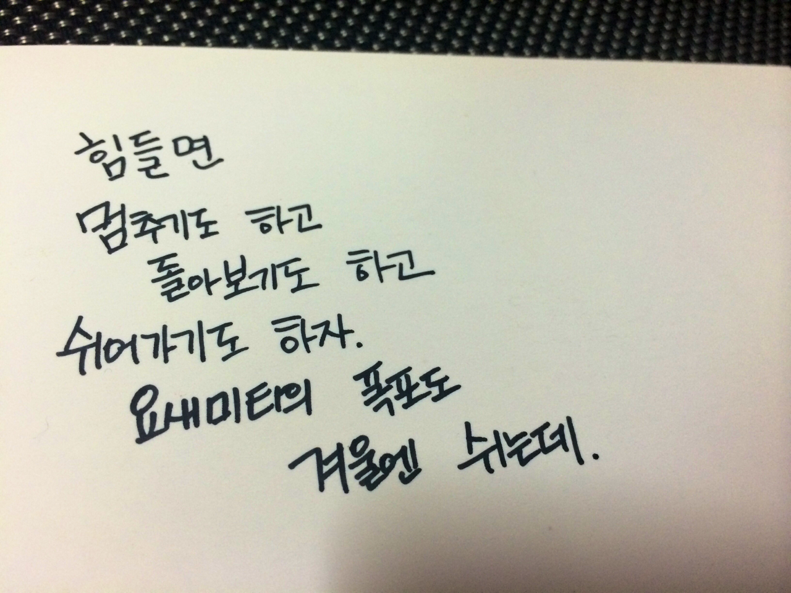

이번에 회사를 그만두고 미국에서 이것저것 보면서 느낀건, 재밌는걸 하기 위해서는 다른사람이 봤을때 내가 재미있어보이는 것을 하는게 아닌, 내가 실제로 재미있는 것을 하고 있어야 한다는 것이었다.
좀더 멋져야한다거나, 다른사람이 부러워하는 삶을 산다거나 하는 것 보다는, 내가 진짜 즐거운가, 내가 정말 만족하고 있는가가 더 중요한 것이다. 그리고 아니다 싶을땐 스스로 멈추고 다시 기준을 잡을 수 있는 여유와 힘이 있어야 한다는 것이다.
자연이 멈춘듯 변화하는 것 처럼, 눈에 띄진않지만 내가 멈췄을때, 아 이만큼 변했구나 라고 할 수 있는 사람이 되는 것이 이번 멈춤에서 정한 기준이다.
요새미티에서 산 엽서의 뒷면에 쓴 글처럼, 언제든 멈출 수 있는 사람이 되어야지. 다른사람이 추월한다고 해도, 흔들리지 않고 지금 내가 서 있는 자리를 즐길 수 있는 사람이 되어 그 자리에서 느낄 수 있는 행복을 오롯이 느낄 수 있는 사람이 되어야겠다.